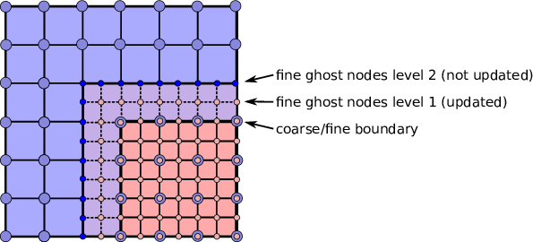

MLMG and Linear Operator Classes
Multi-Level Multi-Grid or MLMG is a class for solving the linear
system using the geometric multigrid method. The constructor of
MLMG takes the reference to MLLinOp, an abstract base
class of various linear operator
classes, MLABecLaplacian, MLPoisson,
MLNodeLaplacian, etc. We choose the type of linear operator
class according to the type the linear system to solve.
MLABecLaplacianfor cell-centered canonical form (equation (1)).MLPoissonfor cell-centered constant coefficient Poisson’s equation \(\nabla^2 \phi = f\).MLNodeLaplacianfor nodal variable coefficient Poisson’s equation \(\nabla \cdot (\sigma \nabla \phi) = f\).
The constructors of these linear operator classes are in the form like below
MLABecLaplacian (const Vector<Geometry>& a_geom,
const Vector<BoxArray>& a_grids,
const Vector<DistributionMapping>& a_dmap,
const LPInfo& a_info = LPInfo(),
const Vector<FabFactory<FArrayBox> const*>& a_factory = {});
It takes Vectors of Geometry, BoxArray and
DistributionMapping. The arguments are Vectors because MLMG can
do multi-level composite solve. If you are using it for single-level,
you can do
// Given Geometry geom, BoxArray grids, and DistributionMapping dmap on single level
MLABecLaplacian mlabeclaplacian({geom}, {grids}, {dmap});
to let the compiler construct Vectors for you. Recall that the
classes Vector, Geometry, BoxArray, and
DistributionMapping are defined in chapter Basics. There are
two new classes that are optional parameters. LPInfo is a
class for passing parameters. FabFactory is used in problems
with embedded boundaries (chapter Embedded Boundaries).
After the linear operator is built, we need to set up boundary conditions. This will be discussed later in section Boundary Conditions.
For MLABecLaplacian, we next need to call member functions
void setScalars (Real A, Real B);
void setACoeffs (int amrlev, const MultiFab& alpha);
void setBCoeffs (int amrlev, const Array<MultiFab const*,AMREX_SPACEDIM>& beta);
to set up the coefficients for equation (1). This is unnecessary for
MLPoisson, as there are no coefficients to set. For MLNodeLaplacian,
one needs to call the member function
void setSigma (int amrlev, const MultiFab& a_sigma);
The int amrlev parameter should be zero for single-level
solves. For multi-level solves, each level needs to be provided with
alpha and beta, or sigma. For composite solves, amrlev 0 will
mean the lowest level for the solver, which is not necessarily the lowest
level in the AMR hierarchy. This is so solves can be done on different sections
of the AMR hierarchy, e.g. on AMR levels 3 to 5.
After boundary conditions and coefficients are prescribed, the linear operator is ready for an MLMG object like below.
MLMG mlmg(mlabeclaplacian);
Optional parameters can be set (see section Parameters),
and then we can use the MLMG member function
Real solve (const Vector<MultiFab*>& a_sol,
const Vector<MultiFab const*>& a_rhs,
Real a_tol_rel, Real a_tol_abs);
to solve the problem given an initial guess and a right-hand side.
Zero is a perfectly fine initial guess. The two Reals in the argument
list are the targeted relative and absolute error tolerances.
The solver will terminate when one of these targets is met.
Set the absolute tolerance to zero if one
does not have a good value for it. The return value of solve
is the max-norm error.
After the solver returns successfully, if needed, we can call
void compResidual (const Vector<MultiFab*>& a_res,
const Vector<MultiFab*>& a_sol,
const Vector<MultiFab const*>& a_rhs);
to compute residual (i.e., \(f - L(\phi)\)) given the solution and the right-hand side. For cell-centered solvers, we can also call the following functions to compute gradient \(\nabla \phi\) and fluxes \(-B \nabla \phi\).
void getGradSolution (const Vector<Array<MultiFab*,AMREX_SPACEDIM> >& a_grad_sol);
void getFluxes (const Vector<Array<MultiFab*,AMREX_SPACEDIM> >& a_fluxes);
Boundary Conditions
We now discuss how to set up boundary conditions for linear operators. In the following, physical domain boundaries refer to the boundaries of the physical domain, whereas coarse/fine boundaries refer to the boundaries between AMR levels. The following steps must be followed in the exact order.
1) For any type of solver, we first need to set physical domain boundary types via the MLLinOp member
function
void setDomainBC (const Array<BCType,AMREX_SPACEDIM>& lobc, // for lower ends
const Array<BCType,AMREX_SPACEDIM>& hibc); // for higher ends
The supported BC types at the physical domain boundaries are
LinOpBCType::Periodicfor periodic boundary.LinOpBCType::Dirichletfor Dirichlet boundary condition.LinOpBCType::Neumannfor homogeneous Neumann boundary condition.LinOpBCType::inhomogNeumannfor inhomogeneous Neumann boundary condition.LinOpBCType::reflect_oddfor reflection with sign changed.
2) Cell-centered solvers only: if we want to do a linear solve where the boundary conditions on the coarsest AMR level of the solve come from a coarser level (e.g. the base AMR level of the solve is > 0 and does not cover the entire domain), we must explicitly provide the coarser data. Boundary conditions from a coarser level are always Dirichlet.
Note that this step, if needed, must be performed before the step below.
The MLLinOp member function for this step is
void setCoarseFineBC (const MultiFab* crse, int crse_ratio);
Here const MultiFab* crse contains the Dirichlet boundary
values at the coarse resolution, and int crse_ratio (e.g., 2)
is the refinement ratio between the coarsest solver level and the AMR
level below it. The MultiFab crse does not need to have ghost cells itself.
If the coarse grid bc’s for the solve are identically zero, nullptr
can be passed instead of crse.
3) Cell-centered solvers only:
before the solve one must always call the MLLinOp member function
virtual void setLevelBC (int amrlev, const MultiFab* levelbcdata,
const MultiFab* robinbc_a,
const MultiFab* robinbc_b,
const MultiFab* robinbc_f) = 0;
If we want to supply an inhomogeneous Dirichlet, inhomogeneous Neumann, or
Robin boundary conditions at the domain boundaries, we must supply those values
in MultiFab* levelbcdata, which must have at least one ghost cell.
Note that the argument amrlev is relative to the solve, not
necessarily the full AMR hierarchy; amrlev = 0 refers to the coarsest
level of the solve.
If the boundary condition is Dirichlet the ghost cells outside the
domain boundary of levelbcdata must hold the value of the solution
at the domain boundary;
if the boundary condition is Neumann those ghost cells must hold
the value of the gradient of the solution normal to the boundary
(e.g. it would hold dphi/dx on both the low and high faces in the x-direction).
If the boundary conditions contain no inhomogeneous Dirichlet or Neumann boundaries,
we can pass nullptr instead of a MultiFab.
We can use the solution array itself to hold these values; the values are copied to internal arrays and will not be over-written when the solution array itself is being updated by the solver. Note, however, that this call does not provide an initial guess for the solve.
It should be emphasized that the data in levelbcdata for
Dirichlet or Neumann boundaries are assumed to be exactly on the face
of the physical domain; storing these values in the ghost cell of
a cell-centered array is a convenience of implementation.
Parameters
There are many parameters that can be set. Here we discuss some commonly used ones.
MLLinOp::setVerbose(int), MLMG::setVerbose(int) and
MLMG:setBottomVerbose(int) control the verbosity of the
linear operator, multigrid solver and the bottom solver, respectively.
The multigrid solver is an iterative solver. The maximal number of
iterations can be changed with MLMG::setMaxIter(int). We can
also do a fixed number of iterations with
MLMG::setFixedIter(int). By default, V-cycle is used. We can
use MLMG::setMaxFmgIter(int) to control how many full multigrid
cycles can be done before switching to V-cycle.
LPInfo::setMaxCoarseningLevel(int) can be used to control the
maximal number of multigrid levels. We usually should not call this
function. However, we sometimes build the solver to simply apply the
operator (e.g., \(L(\phi)\)) without needing to solve the system.
We can do something as follows to avoid the cost of building coarsened
operators for the multigrid.
MLABecLaplacian mlabeclap({geom}, {grids}, {dmap}, LPInfo().setMaxCoarseningLevel(0));
// set up BC
// set up coefficients
MLMG mlmg(mlabeclap);
// out = L(in)
mlmg.apply(out, in); // here both in and out are const Vector<MultiFab*>&
At the bottom of the multigrid cycles, we use a bottom solver which may be
different than the relaxation used at the other levels. The default bottom solver is the
biconjugate gradient stabilized method, but can easily be changed with the MLMG member method
void setBottomSolver (BottomSolver s);
Available choices are
MLMG::BottomSolver::bicgstab: The default.MLMG::BottomSolver::cg: The conjugate gradient method. The matrix must be symmetric.MLMG::BottomSolver::smoother: Smoother such as Gauss-Seidel.MLMG::BottomSolver::bicgcg: Start with bicgstab. Switch to cg if bicgstab fails. The matrix must be symmetric.MLMG::BottomSolver::cgbicg: Start with cg. Switch to bicgstab if cg fails. The matrix must be symmetric.MLMG::BottomSolver::hypre: One of the solvers available through hypre; see the section below on External SolversMLMG::BottomSolver::petsc: Currently for cell-centered only.LPInfo::setAgglomeration(bool)(by default true) can be used continue to coarsen the multigrid by copying what would have been the bottom solver to a newMultiFabwith a newBoxArraywith fewer, larger grids, to allow for additional coarsening.LPInfo::setConsolidation(bool)(by default true) can be used continue to transfer a multigrid problem to fewer MPI ranks. There are more setting sucsh asLPInfo::setConsolidationGridSize(int),consolidation_threshold,consolidation_ratio, andconsolidation_strategy, to give control over how this process works.
Boundary Stencils for Cell-Centered Solvers
We have the option using the MLMG member method
void setMaxOrder (int maxorder);
to set the order of the cell-centered linear operator stencil at physical boundaries
with Dirichlet boundary conditions and at coarse-fine boundaries. In both of these
cases, the boundary value is not defined at the center of the ghost cell.
The order determines the number of interior cells that are used in the extrapolation
of the boundary value from the cell face to the center of the ghost cell, where
the extrapolated value is then used in the regular stencil. For example,
maxorder = 2 uses the boundary value and the first interior value to extrapolate
to the ghost cell center; maxorder = 3 uses the boundary value and the first two interior values.
Curvilinear Coordinates
The linear solvers support curvilinear coordinates including 1D
spherical and 2d cylindrical \((r,z)\). In those cases, the
divergence operator has extra metric terms. If one does not want the
solver to include the metric terms because they have been handled in
other ways, one can call setMetricTerm(bool) with false
on the LPInfo object passed to the constructor of linear
operators.
Embedded Boundaries
AMReX supports multi-level solvers for use with embedded boundaries. These include 1) cell-centered solvers with homogeneous Neumann, homogeneous Dirichlet, or inhomogeneous Dirichlet boundary conditions on the EB faces, and 2) nodal solvers with homogeneous Neumann boundary conditions on the EB faces.
To use a cell-centered solver with EB, one builds a linear operator
MLEBABecLap with EBFArrayBoxFactory (instead of a MLABecLaplacian)
MLEBABecLap (const Vector<Geometry>& a_geom,
const Vector<BoxArray>& a_grids,
const Vector<DistributionMapping>& a_dmap,
const LPInfo& a_info,
const Vector<EBFArrayBoxFactory const*>& a_factory);
The usage of this EB-specific class is essentially the same as
MLABecLaplacian.
The default boundary condition on EB faces is homogeneous Neumann.
To set homogeneous Dirichlet boundary conditions, call
ml_ebabeclap->setEBHomogDirichlet(lev, coeff);
where coeff can be a real number (i.e. the value is the same at every cell) or is the MultiFab holding the coefficient of the gradient at each cell with an EB face.
To set inhomogeneous Dirichlet boundary conditions, call
ml_ebabeclap->setEBDirichlet(lev, phi_on_eb, coeff);
where phi_on_eb is the MultiFab holding the Dirichlet values in every cut cell, and coeff again is a real number (i.e. the value is the same at every cell) or a MultiFab holding the coefficient of the gradient at each cell with an EB face.
Currently there are options to define the face-based coefficients on face centers vs face centroids, and to interpret the solution variable as being defined on cell centers vs cell centroids.
The default is for the solution variable to be defined at cell centers; to tell the solver to interpret the solution variable as living at cell centroids, you must set
ml_ebabeclap->setPhiOnCentroid();
The default is for the face-based coefficients to be defined at face centers; to tell the that the face-based coefficients should be interpreted as living at face centroids, modify the setBCoeffs command to be
ml_ebabeclap->setBCoeffs(lev, beta, MLMG::Location::FaceCentroid);
External Solvers
AMReX provides interfaces to the hypre preconditioners and solvers, including BoomerAMG, GMRES (all variants), PCG, and BICGStab as solvers, and BoomerAMG and Euclid as preconditioners. These can be called as as bottom solvers for both cell-centered and node-based problems.
If it is built with Hypre support, AMReX initializes Hypre by default in
amrex::Initialize. If it is built with CUDA, AMReX will also set up Hypre
to run on device by default. The user can choose to disable the Hypre
initialization by AMReX with ParmParse parameter
amrex.init_hypre=[0|1].
By default the AMReX linear solver code always tries to geometrically coarsen the
problem as much as possible. However, as we have mentioned, we can
call setMaxCoarseningLevel(0) on the LPInfo object
passed to the constructor of a linear operator to disable the
coarsening completely. In that case the bottom solver is solving the
residual correction form of the original problem. To build Hypre, follow the next steps:
1.- git clone https://github.com/hypre-space/hypre.git
2.- cd hypre/src
3.- ./configure
(if you want to build hypre with long long int, do ./configure --enable-bigint )
4.- make install
5.- Create an environment variable with the HYPRE directory --
HYPRE_DIR=/hypre_path/hypre/src/hypre
To use hypre, one must include amrex/Src/Extern/HYPRE in the build system.
For examples of using hypre, we refer the reader to
ABecLaplacian or Nodal Projection EB.
The following parameter should be set to True if the problem to be solved has a singular matrix. In this case, the solution is only defined to within a constant. Setting this parameter to True replaces one row in the matrix sent to hypre from AMReX by a row that sets the value at one cell to 0.
hypre.adjust_singular_matrix: Default is False.
The following parameters can be set in the inputs file to control the choice of preconditioner and smoother:
hypre.hypre_solver: Default is BoomerAMG.hypre.hypre_preconditioner: Default is none; otherwise the type must be specified.hypre.recompute_preconditioner: Default true. Option to recompute the preconditioner.hypre.write_matrix_files: Default false. Option to write out matrix into text files.hypre.overwrite_existing_matrix_files: Default false. Option to over-write existing matrix files.
The following parameters can be set in the inputs file to control the BoomerAMG solver specifically:
hypre.bamg_verbose: verbosity of BoomerAMG preconditioner. Default 0. See HYPRE_BoomerAMGSetPrintLevelhypre.bamg_logging: Default 0. See HYPRE_BoomerAMGSetLogginghypre.bamg_coarsen_type: Default 6. See HYPRE_BoomerAMGSetCoarsenTypehypre.bamg_cycle_type: Default 1. See HYPRE_BoomerAMGSetCycleTypehypre.bamg_relax_type: Default 6. See HYPRE_BoomerAMGSetRelaxTypehypre.bamg_relax_order: Default 1. See HYPRE_BoomerAMGSetRelaxOrderhypre.bamg_num_sweeps: Default 2. See HYPRE_BoomerAMGSetNumSweepshypre.bamg_max_levels: Default 20. See HYPRE_BoomerAMGSetMaxLevelshypre.bamg_strong_threshold: Default 0.25 for 2D, 0.57 for 3D. See HYPRE_BoomerAMGSetStrongThresholdhypre.bamg_interp_type: Default 0. See HYPRE_BoomerAMGSetInterpType
The user is referred to the hypre Hypre Reference Manual for full details on the usage of the parameters described briefly above.
AMReX can also use PETSc as a bottom solver for cell-centered problems. To build PETSc, follow the next steps:
1.- git clone https://github.com/petsc/petsc.git
2.- cd petsc
3.- ./configure --download-hypre=yes --prefix=build_dir
4.- Follow the steps given by petsc
5.- Create an environment variable with the PETSC directory --
PETSC_DIR=/petsc_path/petsc/build_dir
To use PETSc, one must include amrex/Src/Extern/PETSc
in the build system. For an example of using PETSc, we refer the
reader to the tutorial, ABecLaplacian.
MAC Projection
Some codes define a velocity field \(U = (u,v,w)\) on faces, i.e. \(u\) is defined on x-faces, \(v\) is defined on y-faces, and \(w\) is defined on z-faces. We refer to the exact projection of this velocity field as a MAC projection, in which we solve
for \(\phi\) and then set
where \(U^*\) is a vector field (typically velocity) that we want to satisfy \(D(U) = S\). For incompressible flow, \(S = 0\).
The MacProjection class can be defined and used to perform the MAC projection without explicitly calling the solver directly. In addition to solving the variable coefficient Poisson equation, the MacProjector internally computes the divergence of the vector field, \(D(U^*)\), to compute the right-hand-side, and after the solve, subtracts the weighted gradient term to make the vector field result satisfy the divergence constraint.
In the simplest form of the call, \(S\) is assumed to be zero and does not need to be specified. Typically, the user does not allocate the solution array, but it is also possible to create and pass in the solution array and have \(\phi\) returned as well as \(U\).
Caveat: Currently the MAC projection only works when the base level covers the full domain; it does not yet have the interface to pass boundary conditions for a fine level that come from coarser data.
Also note that any Dirichlet or Neumann boundary conditions at domain boundaries
are assumed to be homogeneous. The call to the MLLinOp member function
setLevelBC occurs inside the MacProjection class; one does not need to call that
explicitly when using the MacProjection class.
The code below is taken from the file
Tutorials/LinearSolvers/MAC_Projection_EB/main.cpp in MAC Projection EB and demonstrates how to set up
the MACProjector object and use it to perform a MAC projection.
EBFArrayBoxFactory factory(eb_level, geom, grids, dmap, ng_ebs, ebs);
// allocate face-centered velocities and face-centered beta coefficient
for (int idim = 0; idim < AMREX_SPACEDIM; ++idim) {
vel[idim].define (amrex::convert(grids,IntVect::TheDimensionVector(idim)), dmap, 1, 1,
MFInfo(), factory);
beta[idim].define(amrex::convert(grids,IntVect::TheDimensionVector(idim)), dmap, 1, 0,
MFInfo(), factory);
beta[idim].setVal(1.0); // set beta to 1
}
// If we want to use phi elsewhere, we must create an array in which to return the solution
// MultiFab phi_inout(grids, dmap, 1, 1, MFInfo(), factory);
// If we want to supply a non-zero S we must allocate and fill it outside the solver
// MultiFab S(grids, dmap, 1, 0, MFInfo(), factory);
// Set S here ...
// set initial velocity to U=(1,0,0)
AMREX_D_TERM(vel[0].setVal(1.0);,
vel[1].setVal(0.0);,
vel[2].setVal(0.0););
LPInfo lp_info;
// If we want to use hypre to solve the full problem we do not need to coarsen the GMG stencils
if (use_hypre_as_full_solver)
lp_info.setMaxCoarseningLevel(0);
MacProjector macproj({amrex::GetArrOfPtrs(vel)}, // face-based velocity
{amrex::GetArrOfConstPtrs(beta)}, // beta
{geom}, // the geometry object
lp_info); // structure for passing info to the operator
// Here we specify the desired divergence S
// MacProjector macproj({amrex::GetArrOfPtrs(vel)}, // face-based velocity
// {amrex::GetArrOfConstPtrs(beta)}, // beta
// {geom}, // the geometry object
// lp_info, // structure for passing info to the operator
// {&S}); // defines the specified RHS divergence
// Set bottom-solver to use hypre instead of native BiCGStab
if (use_hypre_as_full_solver || use_hypre_as_bottom_solver)
macproj.setBottomSolver(MLMG::BottomSolver::hypre);
// Set boundary conditions.
// Here we use Neumann on the low x-face, Dirichlet on the high x-face,
// and periodic in the other two directions
// (the first argument is for the low end, the second is for the high end)
// Note that Dirichlet and Neumann boundary conditions are assumed to be homogeneous.
macproj.setDomainBC({AMREX_D_DECL(LinOpBCType::Neumann,
LinOpBCType::Periodic,
LinOpBCType::Periodic)},
{AMREX_D_DECL(LinOpBCType::Dirichlet,
LinOpBCType::Periodic,
LinOpBCType::Periodic)});
macproj.setVerbose(mg_verbose);
macproj.setBottomVerbose(bottom_verbose);
// Define the relative tolerance
Real reltol = 1.e-8;
// Define the absolute tolerance; note that this argument is optional
Real abstol = 1.e-15;
// Solve for phi and subtract from the velocity to make it divergence-free
// Note that when we build with USE_EB = TRUE, we must specify whether the velocities live
// at face centers (MLMG::Location::FaceCenter) or face centroids (MLMG::Location::FaceCentroid)
macproj.project(reltol,abstol,MLMG::Location::FaceCenter);
// If we want to use phi elsewhere, we can pass in an array in which to return the solution
// macproj.project({&phi_inout},reltol,abstol,MLMG::Location::FaceCenter);
See the MAC Projection EB tutorial for the complete working example.
Nodal Projection
Some codes define a velocity field \(U = (u,v,w)\) with all components co-located on cell centers. The nodal solver in AMReX can be used to compute an approximate projection of the cell-centered velocity field, with pressure and velocity divergence defined on nodes. When we use the nodal solver this way, and subtract only the cell average of the gradient from the velocity, it is effectively an approximate projection.
As with the MAC projection, consider that we want to solve
for \(\phi\) and then set
where \(U^*\) is a vector field defined on cell centers and we want to satisfy \(D(U) = S\). For incompressible flow, \(S = 0\).
Currently this nodal approximate projection does not exist in a separate operator like the MAC projection; instead we demonstrate below the steps needed to compute the approximate projection. This means we must compute explicitly the right-hand-side , including the the divergence of the vector field, \(D(U^*)\), solve the variable coefficient Poisson equation, then subtract the weighted gradient term to make the vector field result satisfy the divergence constraint.
//
// Given a cell-centered velocity (vel) field, a cell-centered
// scalar field (sigma) field, and a source term S (either node-
// or cell-centered )solve:
//
// div( sigma * grad(phi) ) = div(vel) - S
//
// and then perform the projection:
//
// vel = vel - sigma * grad(phi)
//
//
// Create the EB factory
//
EBFArrayBoxFactory factory(eb_level, geom, grids, dmap, ng_ebs, ebs);
//
// Create the cell-centered velocity field we want to project
//
MultiFab vel(grids, dmap, AMREX_SPACEDIM, 1, MFInfo(), factory);
// Set velocity field to (1,0,0) including ghost cells for this example
vel.setVal(1.0, 0, 1, 1);
vel.setVal(0.0, 1, AMREX_SPACEDIM-1, 1);
//
// Setup linear operator, AKA the nodal Laplacian
//
LPInfo lp_info;
// If we want to use hypre to solve the full problem we do not need to coarsen the GMG stencils
// if (use_hypre_as_full_solver)
// lp_info.setMaxCoarseningLevel(0);
MLNodeLaplacian matrix({geom}, {grids}, {dmap}, lp_info,
Vector<EBFArrayBoxFactory const*>{&factory});
// Set boundary conditions.
// Here we use Neumann on the low x-face, Dirichlet on the high x-face,
// and periodic in the other two directions
// (the first argument is for the low end, the second is for the high end)
// Note that Dirichlet boundary conditions are assumed to be homogeneous (i.e. phi = 0)
matrix.setDomainBC({AMREX_D_DECL(LinOpBCType::Neumann,
LinOpBCType::Periodic,
LinOpBCType::Periodic)},
{AMREX_D_DECL(LinOpBCType::Dirichlet,
LinOpBCType::Periodic,
LinOpBCType::Periodic)});
// Set matrix attributes to be used by MLMG solver
matrix.setGaussSeidel(true);
matrix.setHarmonicAverage(false);
//
// Compute RHS
//
// NOTE: it's up to the user to compute the RHS. as opposed
// to the MAC projection case !!!
//
// NOTE: do this operation AFTER setting up the linear operator so
// that compRHS method can be used
//
// RHS is nodal
const BoxArray & nd_grids = amrex::convert(grids, IntVect{1,1,1}); // nodal grids
// MultiFab to host RHS
MultiFab rhs(nd_grids, dmap, 1, 1, MFInfo(), factory);
// Cell-centered contributions to RHS
MultiFab S_cc(grids, dmap, 1, 1, MFInfo(), factory);
S_cc.setVal(0.0); // Set it to zero for this example
// Node-centered contributions to RHS
MultiFab S_nd(nd_grids, dmap, 1, 1, MFInfo(), factory);
S_nd.setVal(0.0); // Set it to zero for this example
// Compute RHS -- vel must be cell-centered
matrix.compRHS({&rhs}, {&vel}, {&S_nd}, {&S_cc});
//
// Create the cell-centered sigma field and set it to 1 for this example
//
MultiFab sigma(grids, dmap, 1, 1, MFInfo(), factory);
sigma.setVal(1.0);
// Set sigma
matrix.setSigma(0, sigma);
//
// Create node-centered phi
//
MultiFab phi(nd_grids, dmap, 1, 1, MFInfo(), factory);
phi.setVal(0.0);
//
// Setup MLMG solver
//
MLMG nodal_solver(matrix);
// We can specify the maximum number of iterations
nodal_solver.setMaxIter(mg_maxiter);
nodal_solver.setBottomMaxIter(mg_bottom_maxiter);
nodal_solver.setVerbose(mg_verbose);
nodal_solver.setBottomVerbose(mg_bottom_verbose);
// Set bottom-solver to use hypre instead of native BiCGStab
// ( we could also have set this to cg, bicgcg, cgbicg)
// if (use_hypre_as_full_solver || use_hypre_as_bottom_solver)
// nodal_solver.setBottomSolver(MLMG::BottomSolver::hypre);
// Define the relative tolerance
Real reltol = 1.e-8;
// Define the absolute tolerance; note that this argument is optional
Real abstol = 1.e-15;
//
// Solve div( sigma * grad(phi) ) = RHS
//
nodal_solver.solve( {&phi}, {&rhs}, reltol, abstol);
//
// Create cell-centered MultiFab to hold value of -sigma*grad(phi) at cell-centers
//
//
MultiFab fluxes(grids, dmap, AMREX_SPACEDIM, 1, MFInfo(), factory);
fluxes.setVal(0.0);
// Get fluxes from solver
nodal_solver.getFluxes( {&fluxes} );
//
// Apply projection explicitly -- vel = vel - sigma * grad(phi)
//
MultiFab::Add( *vel, *fluxes, 0, 0, AMREX_SPACEDIM, 0);
See the Nodal Projection EB tutorial for the complete working example.
Tensor Solve
Application codes that solve the Navier-Stokes equations need to evaluate the viscous term; solving for this term implicitly requires a multi-component solve with cross terms. Because this is a commonly used motif, we provide a tensor solve for cell-centered velocity components.
Consider a velocity field \(U = (u,v,w)\) with all components co-located on cell centers. The viscous term can be written in vector form as
and in 3-d Cartesian component form as
Here \(\eta\) is the dynamic viscosity and \(\kappa\) is the bulk viscosity.
We evaluate the following terms from the above using the MLABecLaplacian and MLEBABecLaplacian operators;
the following cross-terms are evaluated separately using the MLTensorOp and MLEBTensorOp operators.
The code below is an example of how to set up the solver to compute the viscous term divtau explicitly:
Box domain(geom[0].Domain());
// Set BCs for Poisson solver in bc_lo, bc_hi
...
//
// First define the operator "ebtensorop"
// Note we call LPInfo().setMaxCoarseningLevel(0) because we are only applying the operator,
// not doing an implicit solve
//
// (alpha * a - beta * (del dot b grad)) sol
//
// LPInfo info;
MLEBTensorOp ebtensorop(geom, grids, dmap, LPInfo().setMaxCoarseningLevel(0),
amrex::GetVecOfConstPtrs(ebfactory));
// It is essential that we set MaxOrder of the solver to 2
// if we want to use the standard sol(i)-sol(i-1) approximation
// for the gradient at Dirichlet boundaries.
// The solver's default order is 3 and this uses three points for the
// gradient at a Dirichlet boundary.
ebtensorop.setMaxOrder(2);
// LinOpBCType Definitions are in amrex/Src/Boundary/AMReX_LO_BCTYPES.H
ebtensorop.setDomainBC ( {(LinOpBCType)bc_lo[0], (LinOpBCType)bc_lo[1], (LinOpBCType)bc_lo[2]},
{(LinOpBCType)bc_hi[0], (LinOpBCType)bc_hi[1], (LinOpBCType)bc_hi[2]} );
// Return div (eta grad)) phi
ebtensorop.setScalars(0.0, -1.0);
amrex::Vector<amrex::Array<std::unique_ptr<amrex::MultiFab>, AMREX_SPACEDIM>> b;
b.resize(max_level + 1);
// Compute the coefficients
for (int lev = 0; lev < nlev; lev++)
{
// We average eta onto faces
for(int dir = 0; dir < AMREX_SPACEDIM; dir++)
{
BoxArray edge_ba = grids[lev];
edge_ba.surroundingNodes(dir);
b[lev][dir] = std::make_unique<MultiFab>(edge_ba, dmap[lev], 1, nghost, MFInfo(), *ebfactory[lev]);
}
average_cellcenter_to_face( GetArrOfPtrs(b[lev]), *etan[lev], geom[lev] );
b[lev][0] -> FillBoundary(geom[lev].periodicity());
b[lev][1] -> FillBoundary(geom[lev].periodicity());
b[lev][2] -> FillBoundary(geom[lev].periodicity());
ebtensorop.setShearViscosity (lev, GetArrOfConstPtrs(b[lev]));
ebtensorop.setEBShearViscosity(lev, (*eta[lev]));
ebtensorop.setLevelBC ( lev, GetVecOfConstPtrs(vel)[lev] );
}
MLMG solver(ebtensorop);
solver.apply(GetVecOfPtrs(divtau), GetVecOfPtrs(vel));
Multi-Component Operators
This section discusses solving linear systems in which the solution variable \(\mathbf{\phi}\) has multiple components.
An example (implemented in the MultiComponent tutorial) might be:
(Note: only operators of the form \(D:\mathbb{R}^n\to\mathbb{R}^n\) are currently allowed.)
To implement a multi-component cell-based operator, inherit from the
MLCellLinOpclass. Override thegetNCompfunction to return the number of components (N)that the operator will use. The solution and rhs fabs must also have at least one ghost node.Fapply,Fsmooth,Ffluxmust be implemented such that the solution and rhs fabs all haveNcomponents.Implementing a multi-component node-based operator is slightly different. A MC nodal operator must specify that the reflux-free coarse/fine strategy is being used by the solver.
solver.setCFStrategy(MLMG::CFStrategy::ghostnodes);
The reflux-free method circumvents the need to implement a special
refluxat the coarse-fine boundary. This is accomplished by using ghost nodes. Each AMR level must have 2 layers of ghost nodes. The second (outermost) layer of nodes is treated as constant by the relaxation, essentially acting as a Dirichlet boundary. The first layer of nodes is evolved using the relaxation, in the same manner as the rest of the solution. When the residual is restricted onto the coarse level (inreflux) this allows the residual at the coarse-fine boundary to be interpolated using the first layer of ghost nodes. Fig. 8 illustrates the how the coarse-fine update takes place.Fig. 8 : Reflux-free coarse-fine boundary update. Level 2 ghost nodes (small dark blue) are interpolated from coarse boundary. Level 1 ghost nodes are updated during the relaxation along with all the other interior fine nodes. Coarse nodes (large blue) on the coarse/fine boundary are updated by restricting with interior nodes and the first level of ghost nodes. Coarse nodes underneath level 2 ghost nodes are not updated. The remaining coarse nodes are updates by restriction.
The MC nodal operator can inherit from the
MCNodeLinOpclass.Fapply,Fsmooth, andFfluxmust update level 1 ghost nodes that are inside the domain. interpolation and restriction can be implemented as usual. reflux is a straightforward restriction from fine to coarse, using level 1 ghost nodes for restriction as described above.See
Tutorials/LinearSolvers/MultiComponentfor a complete working example.
{kind=link}